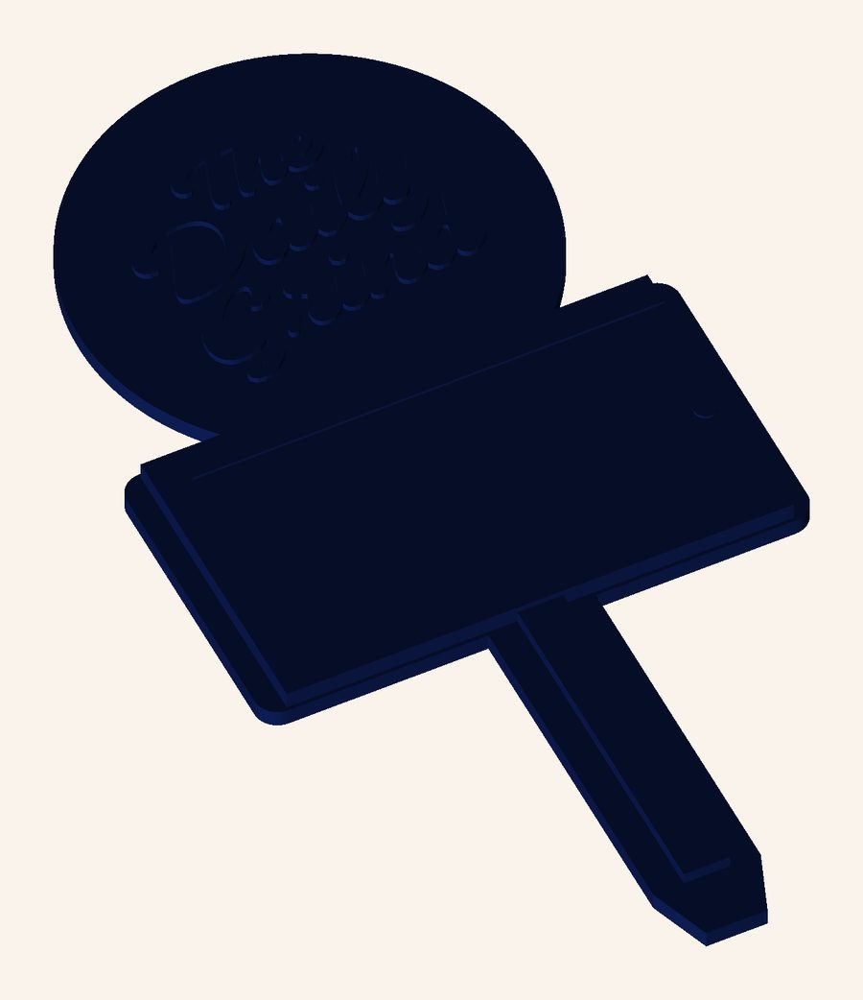
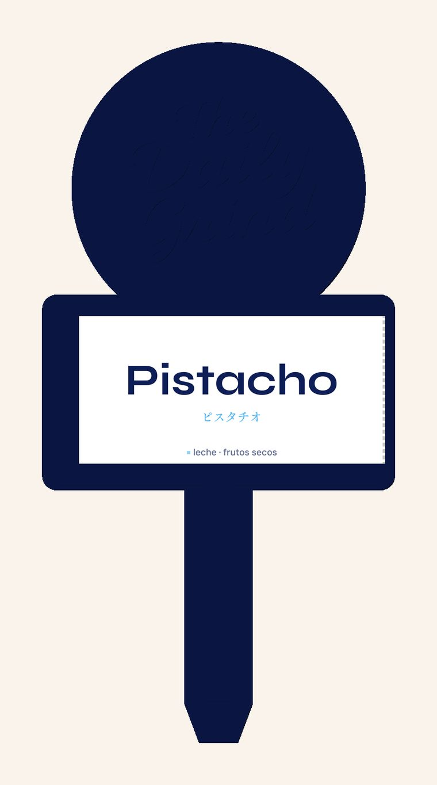
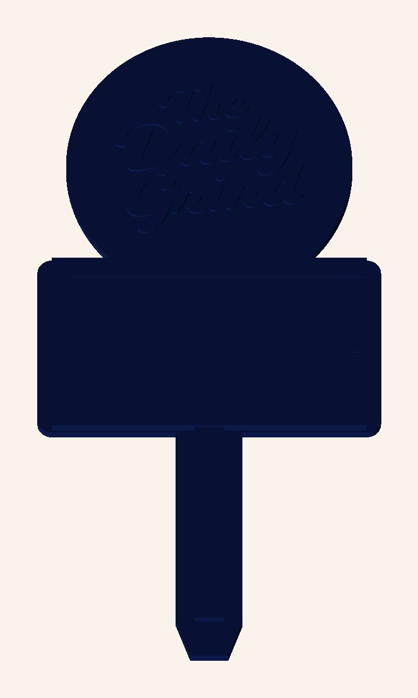
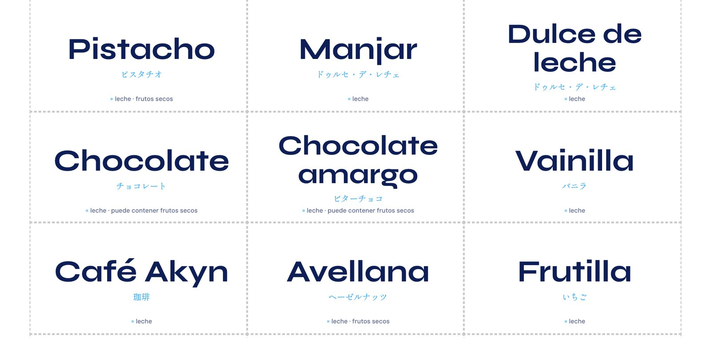
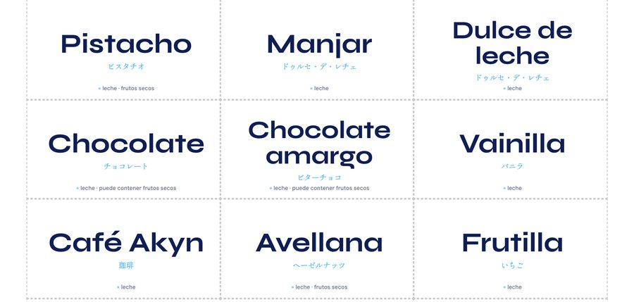

Los letreros de sabor de la heladería, en dos piezas: un soporte impreso en 3D que se queda, y un papelito que se cambia cuando rota la carta.
El logo va arriba porque el soporte es lo permanente: se imprime una vez y se queda en la cubeta. El sabor vive en el papelito, que sale de una hoja normal y se corta con tijera. Cambiar un sabor deja de ser reimprimir la etiqueta entera.

Impreso en 3D con el logo en relieve. El marco sujeta la tarjeta, que entra deslizando por el costado derecho.

La ventana visible mide 62,5 × 30 mm. El nombre se ajusta solo al ancho, así que ningún sabor se sale.
El logo no está redibujado: se traza desde el archivo maestro de la marca y se levanta 0,8 mm sobre el cabezal. El trazo más fino mide 0,93 mm, así que sale limpio con una boquilla de 0,4 mm sin tocar nada.
Programando un cambio de filamento a 2,4 mm de altura, el cuerpo sale navy y el logo crema. Sin impresora multimaterial y sin pintar.

Una hoja A4 rinde 24 tarjetas: los catorce sabores más diez en blanco para escribir a mano cuando entra un sabor de paso. Cada una lleva el nombre, su nombre japonés como sello de cierre y los alérgenos.


Papel de 300 g, o de 200 g plastificado. Se cortan siguiendo las guías punteadas.
Se mantiene la silueta y el orden original, logo arriba y sabor abajo, porque es lo que pide el modelo de dos piezas. Lo que cambia es la ejecución.
| Antes | Ahora | |
|---|---|---|
| Logo | Redibujado, proporciones distintas | Trazado del archivo maestro y extruido |
| Sabor | Gris, mayúscula sostenida, con tracking | Navy, mayúscula inicial, en Syne |
| Paleta | Plateado con degradé, gris sobre blanco | Tinta navy sobre papel |
| Idioma | “Crafted gelato” | Español, con el sello japonés al cierre |
| Información | Solo el nombre | Nombre, japonés y alérgenos |
| Cambiar un sabor | Reimprimir la etiqueta entera | Cambiar el papelito |
De paso quedan corregidas cuatro cosas que Ukiyo Diario prohíbe y que la etiqueta anterior hacía: letter-spacing, mayúscula sostenida en títulos, degradés decorativos y gris en vez de navy.
El vástago se entierra en el helado, y una pieza impresa en FDM no es apta para contacto prolongado tal como sale de la impresora: entre capa y capa quedan surcos que el lavado no alcanza. Hay tres caminos:
En los tres casos: boquilla de acero inoxidable, no de latón, porque el latón contiene plomo.